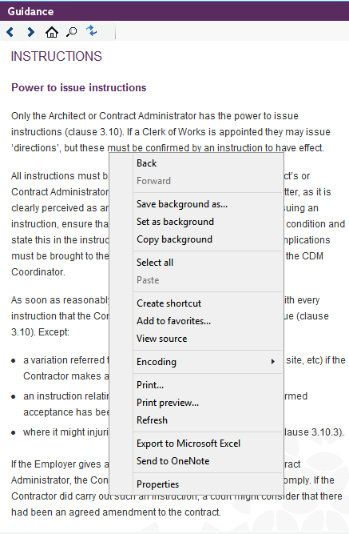

Printing guidance |
It is possible to print out the each topic separately for each Contract from the Guidance panel.
Browse to the appropriate Contract and click on the topic to view it. Next right-click on the page and the user will get the option to either 'Print Preview...' the topic in a separate window, or 'Print...' out the page completely - these options will be near the bottom of the menu.

See also:
Guidance Panel
Searching the Guidance
Synchronising the Guidance